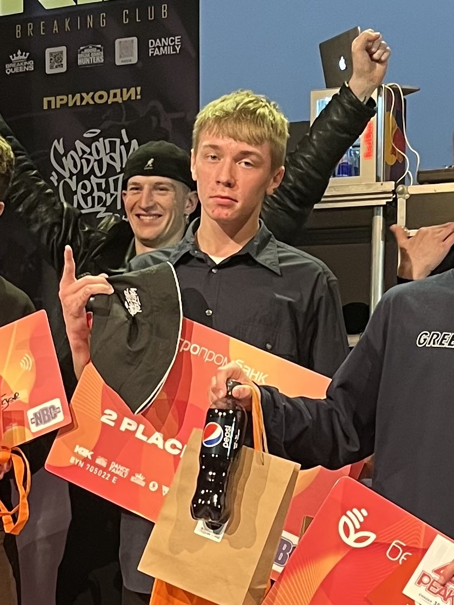
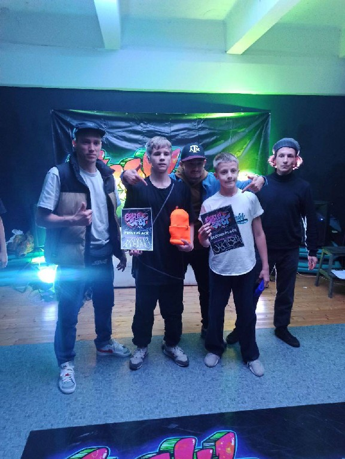
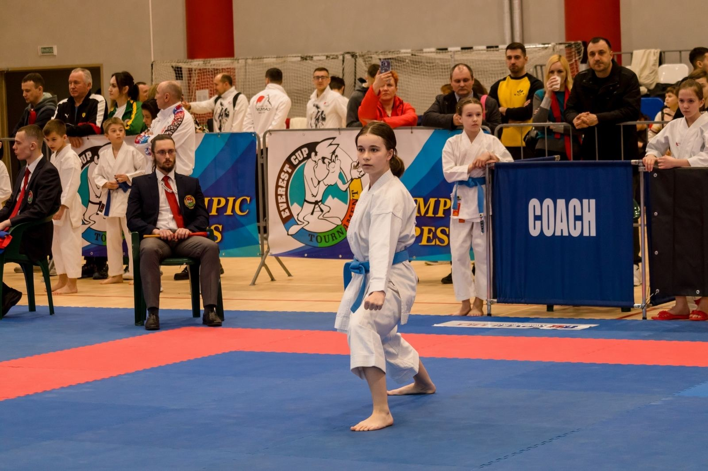
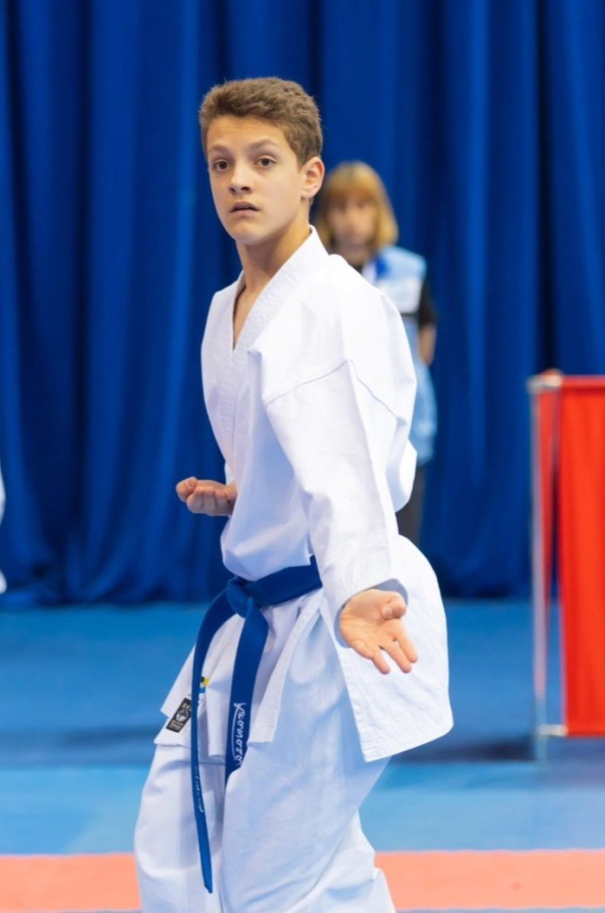

Аллея Звёзд
Аллея Звёзд
Отдел физкультурно-оздоровительной деятельности

Мороз Владислав
Объединение: «Брейк-данс»
Педагог: Янушкевич Владимир Александрович
Достижения:
- Многократный победитель соревнований и батлов по брейк-дансу.
- Дипломат 1 степени XI открытого чемпионата РБ по брейкингу-2022 «SOLO KIDS & PROBATTLE» I «CREWSNOW & BATTLE».
- Дипломат 2 степени «CIRCLE OF TRUST 2022».
- Дипломат 1 степени международного фестиваля по брейкингу BREAKING INTERNATIONAL «AXISPOWER».
- Дипломат 2 степени Чемпионата по брейкингу «MINSK CUP-2022 г.Минск.
- Дипломат 3 степени в отборочном этапе на чемпионат страны.
- Дипломат 1 степени в открытых соревнованиях по брейк-дансу «NBC-2023».

Пигалов Егор
Объединение: «Брейк-данс»
Педагог: Янушкевич Владимир Александрович
Достижения:
- Многократный победитель соревнований и батлов по брейк-дансу.
- Дипломат 1 степени «Чемпионата РБ по брейкингу «ADEPT-2022».
- Дипломат 2 степени «Отборочного этапа на чемпионат страны-2022».
- Дипломат 1 степени «Открытых соревнований по брейк-дансу «NBC-2023».
- Дипломат 2 степени «Открытых соревнований по брейк-дансу «BREAKKINGZ».

Хлебко Александра
Объединение: «Каратэ-до шотокан»
Педагоги: Новашиская Ю.А. и Жданович А.И.
Достижения:
- Имеет второй спортивный разряд по каратэ.
- Дипломат 3 степени «Открытого первенства и чемпионата РБ по каратэ-2022».
- Дипломат 3 степени «Республиканских соревнований «Приз открытия сезона по шотокан каратэ-до-2022».
- Дипломат 3 степени «Международных соревнований по каратэ «Кубок дружбы-2023».
- Дипломат 1 и 2 степени «IX Республиканских соревнованиях по шотокан каратэ-до «Белыя росы-2023».
- Дипломат 3 степени «Открытого республиканского турнира по карате «Everest Cup: олимпийские надежды-2023».
- Трехкратный дипломат 1 степени открытых республиканских соревнований по карате-до шотокан «Край Смолевичский-2023».

Лукашук Андрей
Объединение: «Каратэ-до шотокан»
Педагоги: Новашиская Ю.А. и Жданович А.И.
Достижения:
- Имеет второй спортивный разряд по каратэ.
- Дипломат 3 степени международных соревнований по каратэ «Путь к успеху-2022».
- Дипломат 3 степени «Открытого первенства и чемпионата РБ по каратэ-2022».
- Дипломат 2 степени «Открытого первенство по каратэ-2023».
- Дипломат 2 степени «Открытых республиканских соревнований по карате-до шотокан «Край Смолевичский-2023».